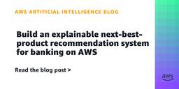
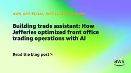
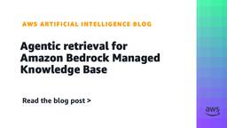
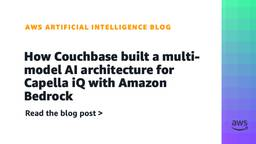
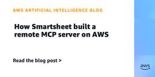

Artificial Intelligence
フィード

Build an explainable next-best-product recommendation system for banking on AWS 1
1
Artificial Intelligence
Learn the architecture and design decisions behind an explainable next-best-product recommendation system for banking, built with Amazon SageMaker AI and PyTorch. A multi-tower neural network with learned attention delivers accurate, per-customer recommendations while providing the explainability that banking regulators require.
1時間前
Get started with OpenAI GPT-5.6 Sol, Terra, and Luna on Amazon Bedrock 1
Artificial Intelligence
OpenAI GPT-5.6 Sol, Terra, and Luna are now generally available on Amazon Bedrock. Learn how to select a model, run inference through the Responses API on the bedrock-mantle endpoint, reduce cost with prompt caching, connect the OpenAI Codex coding agent, and plan for quotas and scaling.
1時間前
Best practices for applying Amazon Bedrock Guardrails to code generation workflows
Artificial Intelligence
In this post, we explain how Amazon Bedrock Guardrails can be configured for code generation workflows with coding assistants to overcome these constraints. With these best practices, you can build an efficient blueprint helping you with effective capacity planning with robust safety coverage.
18時間前
Evaluating AI Agents: A production blueprint with Strands and AgentCore 1
Artificial Intelligence
Together, Motorway and AWS built an end-to-end evaluation pipeline that reduced incorrect results from 1 in 8 queries to 1 in 50 and cut issue detection time from few hours to few minutes. The pipeline combines the Strands Agents SDK with Amazon Bedrock AgentCore, a fully managed service for deploying and operating AI agents at scale. In this post, you will learn how to build this pipeline for your own agents.
1日前

Building trade assistant: How Jefferies optimized front office trading operations with AI 1
Artificial Intelligence
In this post, we explore how Jefferies overcame these challenges with a solution built on Strands Agents, an agent harness SDK for building AI agents that can reason, plan, and act by orchestrating calls to foundation models (FMs) and external tools. The solution uses large language models (LLMs), Amazon Bedrock, and Amazon Bedrock Knowledge Bases. It also uses Model Context Protocol (MCP), an open standard that helps AI agents securely connect to diverse data sources and tools through a unified interface. We cover the solution overview, the rationale for selecting the underlying technology stack, lessons learned, and the business impact the solution created at Jefferies.
1日前
Building multi-Region visualizations with Highcharts in Amazon Quick 1
Artificial Intelligence
This post shows you how to build multi-Region carrier performance dashboards in Quick Sight using Highcharts custom visualizations to overcome native chart limitations. You will learn how to maintain data sovereignty across AWS Regions while creating unified visualizations through the Quick Sight federated dataset capability. The solution includes production-ready chart configurations and addresses security, compliance, and scalability requirements.
1日前
Detecting silent agent failures with Amazon Bedrock AgentCore optimization
Artificial Intelligence
Amazon Bedrock AgentCore optimization surfaces silent behavioral failures in production AI agents: the ones that pass every health check but still deliver wrong outcomes. Learn how insights discovers, explains, and ranks failure patterns across sessions so you can fix the highest-impact issues first.
1日前

Agentic retrieval for Amazon Bedrock Managed Knowledge Base 1
Artificial Intelligence
This post focuses on why classic retrieval falls short on multi-part questions, how the AgenticRetrieveStream API works (including request construction and trace parsing), and when to choose it over the standard Retrieve API.
1日前
AI Teammates: how monday.com runs production AI agents on Amazon Bedrock 1
Artificial Intelligence
AI Teammates are agentic AI on Amazon Bedrock, and few engineering organizations run them in production at the scale that monday.com does. Nine in ten Builders use AI coding tools every month, up from roughly half a year ago. Per-engineer PR throughput is up by more than half. Every figure in this post comes from monday’s own internal production data. In this post, we share the architecture behind those numbers, the retrofits that made it work in a decade-old code base, and the confidence-scored merge play closing the gap to full autonomy.
2日前
Exploring self-distilled reasoning for supervised fine-tuning with Amazon Nova
1
Artificial Intelligence
In this post, we explore an idea for generating thinking tokens for datasets that lack reasoning traces in SFT customization. We first examine the reasoning suppression problem, then introduce Self-Distilled Reasoning (SDR), validate it across three benchmarks, and provide practical recommendations.
3日前
Custom OS installation now available on AWS DeepRacer devices 1
Artificial Intelligence
With the stock firmware and software, developers couldn't modify their AWS DeepRacer devices to use the latest operating systems. Now, developers can upgrade or install a custom operating system (OS) by using a newly released bootloader, which extends the life of these hardware devices. In this post, we introduce the bootloader, discuss how to use it, and share links to a community distribution that uses it.
4日前
Build specialized agent workflows for your business with Amazon Quick and NVIDIA NeMo Agent Toolkit 1
Artificial Intelligence
In this post, we show how Amazon Quick can serve as the business-user front door for specialized agent workflows. We use the NVIDIA NeMo Agent Toolkit to build a supply-chain risk example that helps a planner move from an Amazon Quick dashboard and knowledge context to a guided mitigation recommendation.
4日前

How Couchbase built a multi-model AI architecture for Capella iQ with Amazon Bedrock 1
Artificial Intelligence
This post describes how Couchbase adopted Amazon Bedrock to power Capella iQ with Anthropic’s Claude family of models, the architectural decisions behind their multi-model approach, and the operational benefits realized in production.
4日前
Evolving from legacy BI to agentic AI at Tradeshift with Amazon Quick 1
Artificial Intelligence
In this post, we describe how Tradeshift deployed Amazon Quick with agentic AI capabilities to replace our legacy BI tool, resulting in query response times up to 30 times faster, a 40 percent reduction in total cost of ownership, and turned embedded analytics into a product that generates revenue.
4日前
Transform your sales organization with Amazon Quick: your new agentic AI teammate 1
Artificial Intelligence
In this post, we walk through a few ways that Quick delivers on this promise. We cover the entire sales cycle, from identifying your highest-priority prospect, contacting them, working the deal to close, and keeping the CRM up to date as the account matures, while protecting your scarcest resource: your time.
7日前
Introducing Mobile Layout for Amazon Quick dashboards 1
Artificial Intelligence
Teams that rely on dashboards for daily decisions often must pinch and zoom to interact with controls originally designed for larger displays. Checking revenue during a morning standup, reviewing pipeline metrics between meetings, or monitoring operations while traveling all require extra effort when the dashboard was built for a desktop screen. Mobile Layout for Amazon […]
7日前

How Smartsheet built a remote MCP server on AWS 1
Artificial Intelligence
In this post, we cover a high-level view of the Smartsheet remote MCP architecture, with a focus on the AWS infrastructure behind it. This includes security, governance, scaling and deployment, and the AI-specific optimizations Smartsheet built on AWS.
7日前
Build enterprise search for agents with Amazon Bedrock Managed Knowledge Base 1
Artificial Intelligence
In this post, we walk through the three pillars that make this possible: simplified setup, smarter retrieval, and production readiness. We also show you code examples for setting up a knowledge base and retrieving from it.
8日前
Introducing Grok on Amazon Bedrock
Artificial Intelligence
This post covers what makes Grok 4.3 a great fit for agentic and enterprise workloads, how you access it through Amazon Bedrock, and how to use the capabilities most teams reach for first: a basic chat request, configurable reasoning effort, tool calling, structured output, image input, and stateful multi-turn conversations.
8日前

Built Technologies builds an AI-powered document intelligence solution on AWS to power agents across real estate finance
Artificial Intelligence
Built partnered with the AWS Generative AI Innovation Center (GenAIIC), AWS Partner AND Digital, and AWS account teams to create a scalable, AI-powered document processing engine that can classify, split, extract, evaluate, and reason over complex real estate finance documents. It reduces workflows that previously took days to minutes, supports hundreds of document types, and gives technical teams and industry experts a shared environment for building and improving document processors.
9日前